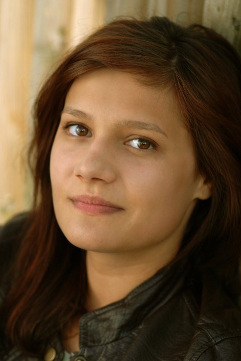

Get in touch
Please feel free to send me a mail should you have any queries!
Passionate radio host and podcast producer with a background in multimedia design.
I have been working at a Danish radio station, Radio Jazz Copenhagen, since 2014. My work there consists of co-hosting and producing a variety of broadcasts, including quiz shows and interviews with notable jazz musicians. I have recently interviewed artists such as jazz pianist Kenny Barron and Eliane Elias, alt-sax player Lee Konitz and the infamous creator of ethio-jazz, Mulatu Astatke. I also produce shows in multiple or dual languages, such as Rundt i byen/All Over The City, featuring an exclusive interview with the Hungarian ambassador to the Kingdom of Denmark, Laszlo Hellebrandt, and the radio play series entitled There Is Nothing Like... During 2016, I have been working at an Australian commercial radio station in a content producing capacity.Through 2017 and 2018 I have produced and co-hosted the series CPH Postcast, a news and politics podcast made for the Copenhagen Post, the only English-language newspaper in Denmark.
Please feel free to send me a mail should you have any queries!
As a designer, I have been commissioned to sketch and deliver different advertising materials for a plethora of Danish artists, including Erik Clausen, Per Vers, Jesper Lohmann and Ghita Noerby, to name a few. I am an avid reader and thus it is my personal goal to read every single book that has recieved the Nobel Prize in Literature.